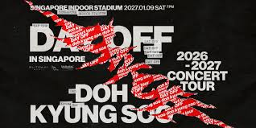
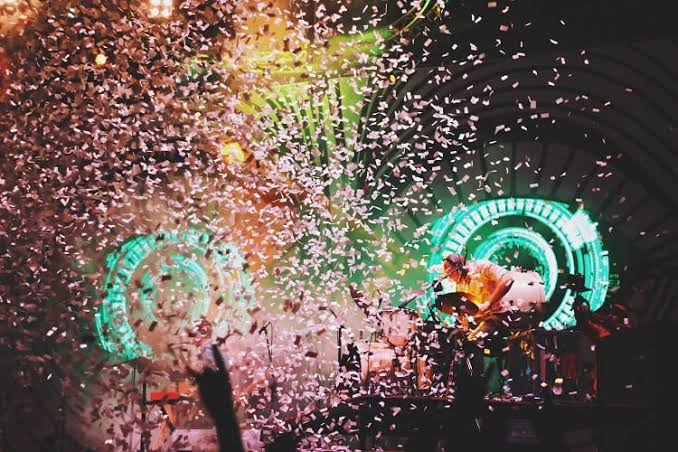
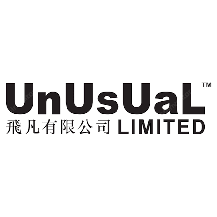

Promotion · Singapore Indoor Stadium
Doh Kyung Soo
A repeat K-pop relationship linking fan demand, VIP yield and arena execution.
Strategy and commercial review · SGX: 1D1
A promoter that can fill arenas, with books nobody could sign off.
UnUsUaL has deep Asian artist relationships, its own production capability and a history of stadium-scale shows. The investment case is now governed by a disclaimed audit, a disputed asset and the unresolved sale of the former parent's controlling stake.


00 · Evidence · Research score
UnUsUaL sits in the Fragile band. Growth from the pandemic low and genuine cash generation earn points, but three loss years, a disclaimed audit, weak disclosure and receivership overhang keep the rating provisional.
Fragile · sensitivity range 28-39.
This score measures business quality and future potential, not the share price.
The score recognises a real operating franchise but cannot look through an audit disclaimer.
Cash conversion in good years lifts the score. Unreliable accounts and concentrated promotion revenue hold it back.
| Component | Weight | Rating | Points | Assessment |
|---|---|---|---|---|
| Revenue CAGR | 6 | 5 | 6.0 | +87% a year from a COVID low. |
| Net margin | 7 | 0 | 0.0 | Median -8.5%, excluding write-downs. |
| ROIC / ROE | 9 | 0 | 0.0 | Losses in three of five years. |
| Cash-flow stability | 9 | 3 | 5.4 | Free cash flow positive in four of five years. |
| Balance sheet | 9 | 0 | 0.0 | Net cash, but interest cover below 1.5x. |
| Component | Weight | Rating | Points | Assessment |
|---|---|---|---|---|
| Brand recognition | 2 | 3 | 1.2 | Leading local promoter with regional reach. |
| Competitive advantage | 7 | 1 | 1.4 | Artist ties and kit, but no durable platform. |
| Market share | 4 | 2 | 1.6 | Not disclosed; rated 2 by rule. |
| Customer relationships | 5 | 2 | 2.0 | Not disclosed; rated 2 by rule. |
| Geographic reach | 2 | 2 | 0.8 | Geographic revenue not disclosed. |
| Component | Weight | Rating | Points | Assessment |
|---|---|---|---|---|
| Industry growth | 6 | 2 | 2.4 | Live music grows about 4.6% a year. |
| Technology adoption | 4 | 1 | 0.8 | No platform or fan-data business disclosed. |
| New markets | 6 | 2 | 2.4 | Australia activity and a Chengdu venture. |
| Diversification | 5 | 1 | 1.0 | Promotion is 85.5% of revenue. |
| Partnerships | 4 | 2 | 1.6 | Binding deals include an unnamed party. |
| Component | Weight | Rating | Points | Assessment |
|---|---|---|---|---|
| Economic resilience | 3 | 1 | 0.6 | COVID cut revenue about 98%. |
| Customer diversification | 4 | 2 | 1.6 | Not disclosed; rated 2 by rule. |
| Technology resilience | 3 | 2 | 1.2 | Live shows endure; no tech response disclosed. |
| Regulatory resilience | 2 | 3 | 1.2 | Open accounting review and SGX queries. |
| Operational resilience | 3 | 2 | 1.2 | Founder-run and board rebuilt in 2026. |
01 · Exhibit · Company snapshot
Established in 1997 as a stage, sound and lighting rental business, UnUsUaL grew into a regional producer and promoter. It listed in 2017 as an mm2 spin-off and now operates under the shadow of receivers controlling that parent's 61.1% stake.

A repeat K-pop relationship linking fan demand, VIP yield and arena execution.
In-house technical capability is the operating foundation beneath promotion.
Artist guarantees are committed before tickets sell.
Venues, crews and equipment are fixed city by city.
Tickets, sponsors, VIP packages and merchandise create revenue.
The promoter retains what is left after fixed commitments.
Artist and venue costs consumed 96% of FY2026 revenue, and 107% in FY2025.
UOB-appointed receivers control the former parent's block; Hildrics funds held 8.1% and other holders 30.8%.
Founder Leslie Aw leads promotion while Johnny Aw runs technical production and equipment.
The official portfolio includes Andy Lau, JJ Lin, Super Junior, Eric Chou, Westlife and many others.
The official site describes UnUsUaL as one of Asia's leading names in large-scale live events and concerts.
02 · Exhibit · Divisions
Promotion is the scale engine and the risk engine. Production carries about S$3m a year of depreciation and write-downs; equipment rental is small but positive.
S$37.3m revenue; EBITDA +S$0.38m; pre-tax loss S$6.30m.
S$5.49m revenue; EBITDA -S$0.94m; pre-tax loss S$3.85m.
S$0.85m revenue and a positive S$0.46m pre-tax result.
EBITDA moved from -S$6.03m to +S$0.38m.
Asset write-downs across FY2025-26.
Trade receivables more than two years past due.
| Segment | FY2025 revenue | FY2026 revenue | FY2025 EBITDA | FY2026 EBITDA | FY2026 PBT |
|---|---|---|---|---|---|
| Promotion | S$46.43m | S$37.29m | -S$6.03m | +S$0.38m | -S$6.30m |
| Production | S$5.41m | S$5.49m | -S$0.37m | -S$0.94m | -S$3.85m |
| Others | S$1.38m | S$0.85m | +S$0.79m | +S$0.46m | +S$0.46m |
Promotion's cash earnings almost recovered in FY2026, but legacy asset charges kept the segment deeply loss-making.
03 · Evidence · Financials
Revenue recovered rapidly after COVID, peaked at S$74.4m and then fell 41%. The loss narrowed in FY2026 because gross profit improved and damage charges fell, not because the business grew.
FY2024's 32.9% gross margin became a gross loss one year later, showing how quickly show economics reverse.
| FY | Revenue | Gross margin | Net result | Operating cash |
|---|---|---|---|---|
| 2022 | S$3.6m | -22.3% | -S$4.3m | +S$0.2m |
| 2023 | S$29.2m | 25.9% | +S$1.8m | +S$10.8m |
| 2024 | S$74.4m | 32.9% | +S$7.7m | +S$13.4m |
| 2025 | S$53.2m | -7.5% | -S$23.3m | +S$6.7m |
| 2026 | S$43.6m | 3.6% | -S$9.1m | -S$1.3m |
Better gross profit added S$5.6m, smaller write-downs S$5.1m, lower credit losses S$1.6m and lower administration cost S$1.1m.
04 · Evidence · Audit and control
The accounting review was advisory, not an audit. A new auditor must independently decide whether the partnership income, asset and removed receivables are supported.
First-half revenue reclassified as investment-derived profit sharing.
S$3.28m paid in cash; adviser viewed it as a loan subject to loss testing.
Nexia must reach its own view; the counterparty remained unnamed.
A full write-off would reduce book value from about 1.81 cents to roughly 1.08 cents a share.
Raised S$19.4m with mm2 retaining control.
UOB put receivers over mm2's 61.1% block.
CLA Global TS gave no opinion and later stepped down.
Three new independent directors joined after a one-week gap.
| Item | FY2025 | FY2026 |
|---|---|---|
| Cash | S$9.51m | S$6.47m |
| Other investment | - | S$7.48m |
| Receivables | S$3.60m | S$3.39m |
| Equipment | S$9.85m | S$7.25m |
| Total assets | S$37.47m | S$29.44m |
| Borrowings and leases | S$1.83m | S$4.31m |
| Equity | S$27.99m | S$18.47m |
A buyer crossing 30% would normally trigger a general offer under Singapore's Take-over Code.
05 · Decision · Valuation and scenarios
If the S$7.48m investment and S$1.83m of fair-value assets are treated as cash-like, the operating business was valued at only about S$3.8m. The discount is not only a margin view; it is a trust view.
S$35m revenue at 0% gross margin; the asset is impaired and the control block sells cheaply.
S$45m revenue at 8% margin; a steady slate and a new owner retain management.
S$60m revenue at 15% margin; hit shows sell out and a clean audit returns.
| Company | Business | Revenue | Gross margin | Net margin |
|---|---|---|---|---|
| UnUsUaL | Promotion and production | S$43.6m | 3.6% | -20.9% |
| Live Nation | Concerts, ticketing, venues | US$25.2bn | n/a | 2.0% |
| G.H.Y | TV, film and reduced concerts | RMB511m | 19.2% | 1.7% |
| NoonTalk | Talent, production and events | S$3.8m | -17.6% | -66.5% |
FY2028 scenarios hold overhead near FY2026's S$5m. They are analytical cases, not company guidance.
06 · Evidence · Demand economics
Artists choose the promoter offering the best guarantee; fans choose the specific artist. The promoter absorbs the mismatch between a fixed fee and uncertain sell-through.
Break-even is around 86% sold when committed cost is 95. The illustration shows why a few weak dates can sink a year.
Fans and sponsors decide how much demand exists.
Costs are locked months before the show.
Act, price, fan club and city determine take-up.
The promoter keeps what remains after everyone else is paid.
| Party or driver | What matters | Margin signal |
|---|---|---|
| Artists and agents | Highest guarantee and safe market | Bids up cost |
| Fans | The act first, price second | Strong only for hits |
| Sponsors | Audience fit and size | Good when sold early |
| Consumer spending | Sell-through after fees are fixed | High exposure |
| Venues and labour | Local cost base | High exposure |
| Regional tourism | Travelling fans and city draw | Medium-high exposure |
07 · Evidence · Industry and competition
Streaming does not replace being in the room, but that does not guarantee promoter margin. The largest players stabilise thin promotion returns with ticketing, venues and fan data.
Artists set fees; venue operators set most running costs.
Global and local promoters bid for the same tours.
Contacts and cash for guarantees are the main barriers.
Fans pay for hit acts and skip weaker ones.
Streaming does not replace live presence.
Annual ticket-sales growth forecast to 2030.
Reported staging premium versus Seoul, Bangkok or Jakarta.
2025 revenue, roughly 750 times UnUsUaL's.
| Capability | UnUsUaL | Live Nation | AEG | Local independents |
|---|---|---|---|---|
| Asian artist relationships | Strong | Strong | Moderate | Moderate |
| Global mega-tours | Low | Very strong | Very strong | Low |
| In-house production | Strong | Strong | Strong | Varies |
| Ticketing and fan data | Low | Very strong | Strong | Low |
| Multi-city routing | Moderate | Very strong | Strong | Low |
| Reporting credibility | Weak | Strong | Private | Private |
UnUsUaL's niche is Mandopop, K-pop and legacy acts routed through Singapore, Kuala Lumpur and Australia.
08 · Decision · Risk matrix
Select a risk to inspect its trigger and mitigation. Probability and impact are stated in words, so the matrix does not depend on colour.
Value of one gross-margin point on FY2026 revenue.
Book value lost for each 10% impairment.
Illustrative break-even for a fixed-cost show.
CLA Global TS gave no opinion on FY2026 and then stepped down.
Only the two founding brothers remained from 27 July to 3 August before three independents joined.
The office lease is with Axcel Properties, an interested person.
Every other strategic gain remains discounted while the accounts are disclaimed.
09 · Decision · Strategy and outlook
Growth cannot outrun a credibility discount. The next slate should be priced around capped risk and early sponsorship, while ownership of ticketing, packages and formats gradually retains more value.
Name the counterparty and secure or recover the S$7.48m asset.
Use revenue shares or capped fees; sell sponsors before booking.
Back a buyer that funds shows and treats minorities fairly.
Build VIP packages, ticketing links and owned festivals.
Interactive FY2028 scenario
A steady slate, more selective bidding and a new owner who retains management.
Illustrative
Below the 11.5% overhead threshold
Audit clean-up still required
The company still routes recognised acts across multiple Asian and Australian cities.
Losses, write-downs and an audit disclaimer obscure the value of the franchise.
FY2027 opinion, the 61.1% block sale and full-year gross margin.
The score rises with a clean audit, settled control and 15% margin. It falls if the disputed asset is impaired or the next slate repeats the loss cycle.
Sources and evidence
Evidence grade C, provisional. About 46% of weighted evidence is audited or independently verified.
Research standard
Figures are in Singapore dollars unless stated. This is independent research for education, not investment advice or a price target.
Company and concert imagery was supplied with the research brief and is presented as editorial evidence.